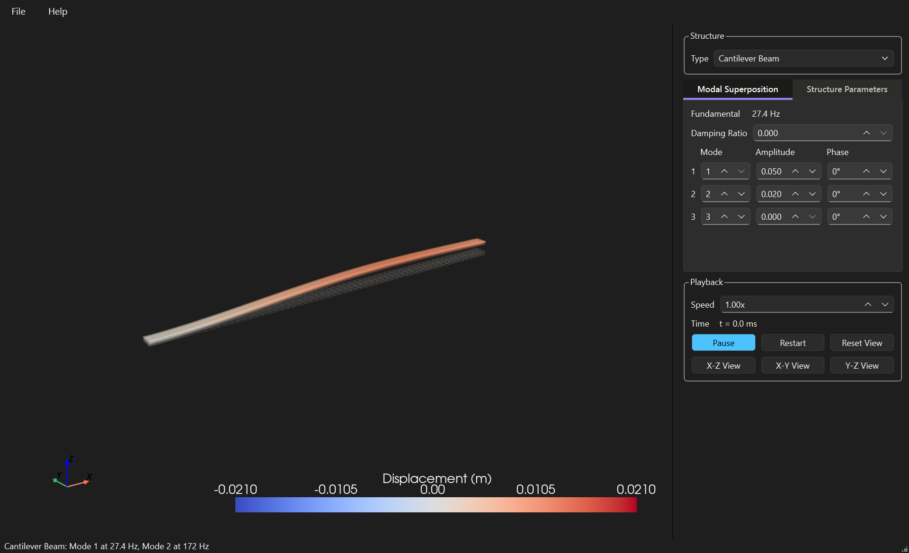
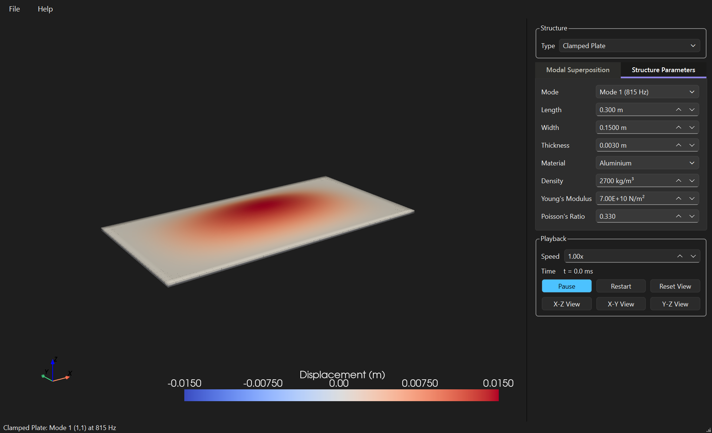
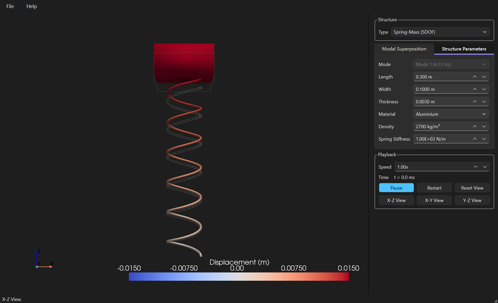

Educational software for students, engineers, researchers and anyone building something: see how a simple structure actually deflects while it vibrates. Pick a beam, a plate or a spring on a mass, set its size and what it is made of, and the mode shape moves on screen at a pace you can follow - rotate, pan and zoom the view while it is moving.
Version 0.1.0 · Windows and macOS · free and open source · MIT licence · release notes

A mode shape drawn on paper is a frozen curve with arrows. On screen it is a structure bending, and the difference is the whole point: you see where the nodes sit, how much of the length actually moves, and how the second mode differs from the first. That is what this is for - a lecture demonstration, a check on intuition before the analysis, or an afternoon spent finding out why a shelf hums.
A teaching tool, not an analysis package: the structures are uniform and the results are closed-form. A real part with holes, welds or joints needs a finite element model instead.
Every frequency is computed from the dimensions, the density and the stiffness, with the boundary conditions of the type you chose. Change the thickness and watch the number move with it.
Real structures vibrate far too fast to see. The animation slows itself to the structure, so mode 1 always takes two seconds per cycle whatever it runs at, and a high mode is as watchable as a low one.
Study one mode by itself, or superpose three with their own amplitudes and phases and watch them interfere. Add damping and see the motion decay.
Each family carries its own theory, and the app shows only the parameters that family uses.
Cantilever, simply supported, and clamped at both ends. Euler-Bernoulli theory, six modes each.
Simply supported on all four edges, or clamped on all four. Kirchhoff theory; the clamped plate uses Warburton's frequencies, within about 1% of the published values.
One mass on one spring: the simplest vibrating system, and what each mode of a beam behaves like on its own.


Every control, what it does, and the theory behind each system.
The same pages open inside the app under Help > User Manual, or by pressing F1.
Version 0.1.0, built on Windows and macOS by the project's own workflow. What changed, and what it cannot do, is in the release notes - worth a minute before the download, since the macOS bundle is not notarised and needs one extra step to open.
The same build as a folder, for anyone who would rather not run an installer. 177 MB.
Download the zipAn application bundle. Not notarised: right-click and choose Open the first time. 174 MB.
Download for macOSgit clone https://github.com/Charette-AI-Group/structuralVibrationView.git
cd structuralVibrationView
python -m venv .venv
.venv\Scripts\Activate.ps1
pip install -e ".[dev]"
structural-vibration-viewWindows, Python 3.14 or newer. The 3D view is PyVista on VTK, which the install command brings with it.
Every version's notes are kept in the repository under docs/releaseNotes, and older builds stay on the releases page. Source on GitHub, MIT licence.
If it saved you an afternoon, you can say thank you.